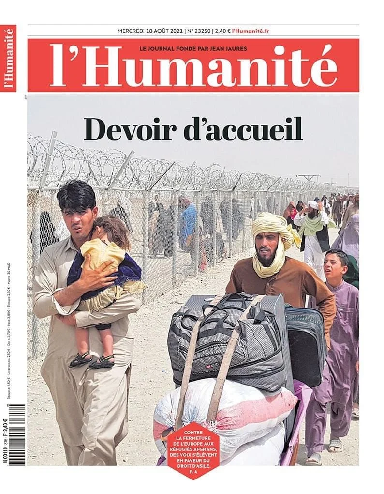

Revue de presse
« Devoir d’accueil » à la une de L’Humanité
Date indiquée par Facebook · 19 août 2021
Repères éditoriaux
Nous avons relayé la une de L’Humanité du 18 août 2021. Sous le titre « Devoir d’accueil », le journal met en avant la situation de familles qui fuient l’Afghanistan et la question de l’accueil des réfugiés.

Sources
Archive rouge · document diffusé sur Facebook · AR-0002-FB-02024
À lire aussi · À la rentrée 2026, au moins 2 355 enfants restés sans solution d’hébergement